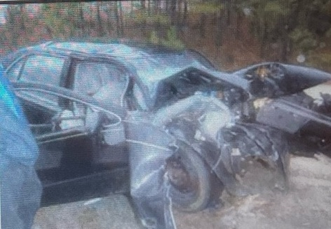
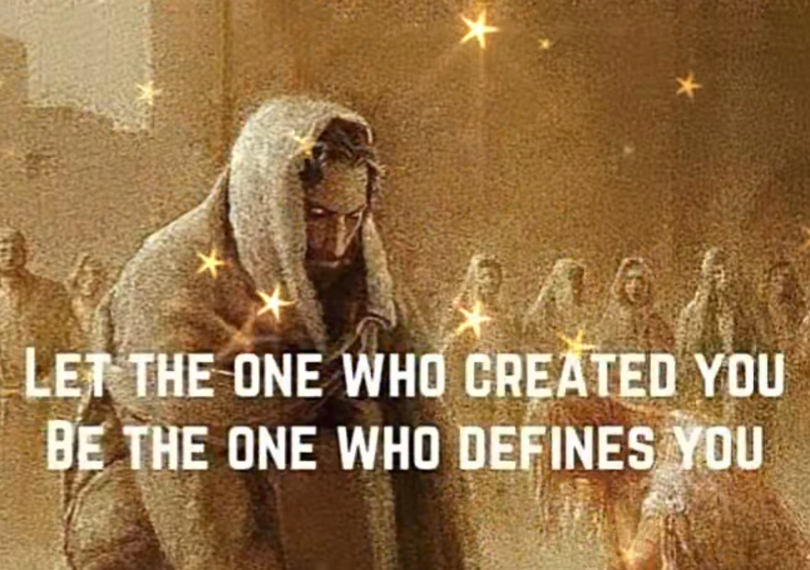
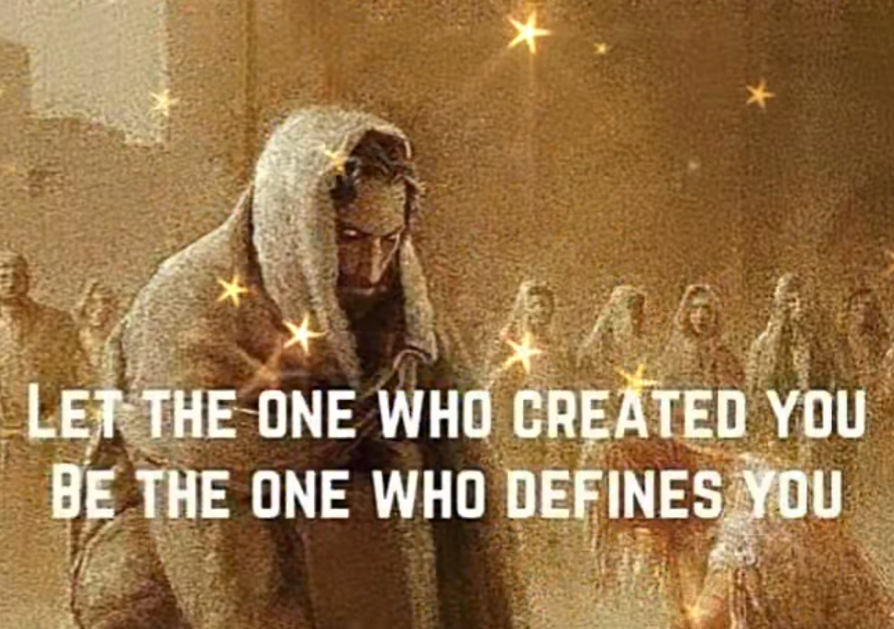

December 2025
We Must Not Forget: JESUS IS THE REASON FOR THE SEASON!
Try giving a gift of SELF that is PRICELESS!!! Make a difference in people’s everyday life.
Make this month a time to share Jesus with Family, Friends, & Strangers. Everyday say to yourself I am going to be a WITNESS, or a PEACEMAKER, or a HELPER, or a PROVIDER, or a JOY MAKER. I will do this by sharing the Love of God to others wherever I go, and the people around me.
- SPEAK KIND WORDS:
You are beautiful. You are loved. Jesus Loves You & I do too. God created you & you are unique. You can make it, for I believe in you.
Those people that spoke evil of you, let’s pray for them. Forgive them and let God handle the problem for you concerning them. Jesus Christ is the Prince of Peace. He wants you to receive Peace from him today.
- WRITE NOTES & LETTERS:
Write on little cards Bible Verses with a comment such as I hope this brings Joy & Peace to you today.
Write letters from the heart to share your concern and you care about an individual. Tell them how they have touched your life. Your words to them could give them a Peace to their troubled heart.
- GIVING THE GIFT OF TIME:
Find out what you can do to show you care, by reaching out to help someone with a task.
Share a cup of coffee or soda and share a conversation for a few minutes with someone.
Take someone out to eat that never gets to have the enjoyment of being treated being important and special. Talk about how you are being blessed to have those special minutes with them.
- GIVE GIFTS OF LOVE:
This could be paying a bill, or buying some gas for their automobile, or purchasing some groceries.
Pay for someone’s meal you do not know behind you through a fast food drive through.
Give a bowl or sack of fruit & candy to a person with a note I CARE! I HOPE YOU HAVE A WONDERFUL BLESSED PEACEFUL & JOYFUL DAY!
These were a few suggestions. Seek God and ask Him to use you each day to make a difference in someone else’s life❤️.
MERRY CHRISTMAS! Love you all,
—Pastor Debbie
I would like to thank all who help with the Fall Festival. It was a great success. We are now working on the Christmas program; the children are learning their Bible verse and song. So please make plans to come and support them on December 14th in the morning service. Please be in prayer for the children’s church program.
God bless you all,
—Jannette White
WEDNESDAY, DECEMBER 3 At 10:00 a.m. Pastor Debbie Sharing Jesus On LaGrange TV.
SATURDAY EVENING, DECEMBER 6 At 6:00 p.m. (Church Fellowship Hall). LADIES VICTORIAN CHRISTMAS TEA
SUNDAY EVENING, DECEMBER 7 At: 4:30 p.m. Ladies Meeting.
SUNDAY EVENING, DECEMBER 7 After Our 5:30 p.m. Church Service Those That Would Like To Go With Pastor Debbie To Ephesus Baptist Church To See Their Live Nativity Scene Are Welcome To Go.
SATURDAY EVENING, DECEMBER 13 The CMA Cross & Crown Riders Will Be Using Our Church Fellowship Hall At 6:00 p.m. For Their Christmas Party. (Cross & Crown Members Are Asked To Bring A Couple Food Items For The Meal and A White Elephant Exchange Christmas Gift).
SUNDAY MORNING, DECEMBER 14 YOUTH CHRISTMAS PLAY & YOUTH CHOIR. After Service Our CHURCH CHRISTMAS LUNCH & PARTY. (Best Chili, Best Soup, & Best Dessert Contest). EVERY ADULT IS TO BRING A CHRISTMAS GIFT For The White Elephant Exchange. All Parents Are Responsible To Bring Your Child A Gift With Their Name On The Gift.
SUNDAY NIGHT, DECEMBER 14 NO SUNDAY NIGHT SERVICE!
SUNDAY DECEMBER 21 We Will Be Having Both Sunday Morning Worship Service At 11:00 a.m. & Sunday Evening Worship Service At 5:30 p.m.
TUESDAY, DECEMBER 23, At 11:00 a.m. GOLDEN HARMONY EVENT & LUNCHEON. (EVERYONE Attending Are Asked To Bring A White Elephant Exchange Christmas Gift).
WEDNESDAY NIGHT, DECEMBER 24 At 6:30 p.m. JOIN US FOR A BIRTHDAY PARTY CELEBRATION FOR JESUS!!!!
T-Shirts:
We are taking orders this month for our Church T-Shrits
They will be available in 2 colors eithers Pink or Blue. If you want to order one or more for you and family members, (These must be per-paid for)
please see Sis.Debra Summerlin to order and pay for them
Size and Cost
- Small $12
- Medium $12
- Large $12
- X-Large $12
- 2X-Large $15
- 3X-Large $18
- 4X-Large $18
- 5x-Large $20
If interested in Children sizes and prices, please check in with Sis.Debra Summerlin
CHURCH NEEDS:
Heaven Bound Church of God needs volunteers to help keep God’s house clean! We need volunteers to vacuum, clean the sanctuary, and clean both bathrooms one time a month.
- We need donations of bottled water.
- We need donations of children’s church sausage biscuits or chicken biscuits.
- Kaylan Englett 12/9
- Cilfton Bagby 12/11

- Pastor Lee & Debbie (We always need to pray for our pastors)
- Wyatt Pike (Heart, & Kidneys)
- Skip & Diane Skipper (Totally Healing Throughout Their Bodies)
- Linda Massey (Hip & Legs)
- Donna Johnston (Back & Strength)
From Sister Marie Lashley:
I just want to start off with thanking GOD for sparing my life 12 years ago December 4th. GOD spared my life from such a terrible car accident. I broke my left wrist and broke my heel bone on my right foot. The doctors had to do reconstructive surgery on my foot. Doctors said I wouldn’t walk again; if I did it would take a year, but I was walking again in 3 months, driving again in 4 months, and went back to work in 6 months. People can’t tell me there is no GOD — I know better than that. GOD performs miracles every day and I am living proof. Yes, it was a struggle and a hard road. I learned that we have to be grateful and thankful for the people in our lives. We need to take time out of our busy schedules to let our loved ones and friends know that we love them. Spend time with them. We take life for granted; we are not promised another day. We could be here today, gone tomorrow. I had some scary times with my recovery, but I knew GOD was there all the time holding me. I learned to take that first step of faith when I had to learn to walk all over again. My oldest grandson was learning how to first walk with me when I was having to learn to walk all over again. That’s memories that I have. There were so many times I was frustrated, scared, worried and wondered, “Why me, LORD?” But I had to quit questioning it. Everything happens for a reason. I know one thing: it made my faith strong. It was just a test that I went through, but it came out a miraculous and extraordinary TESTIMONY. Remember we can’t, but GOD can. I am one blessed girl.

CONGRATULATIONS TO Beverly Brownsword & Laura Turpin For Being Our 2025 Successful Winners Of Heaven Bound JOURNEY OF CHANGE WEIGHT LOSS.
 

💐 A Special Thank You
We want to give a heartfelt thank you to Sister Beverly Brownsword for faithfully putting together our monthly church flyers. Your time, effort, and creativity help keep everyone informed and connected, and your work truly blesses our church family each month.
We appreciate all you do, Beverly! 💛